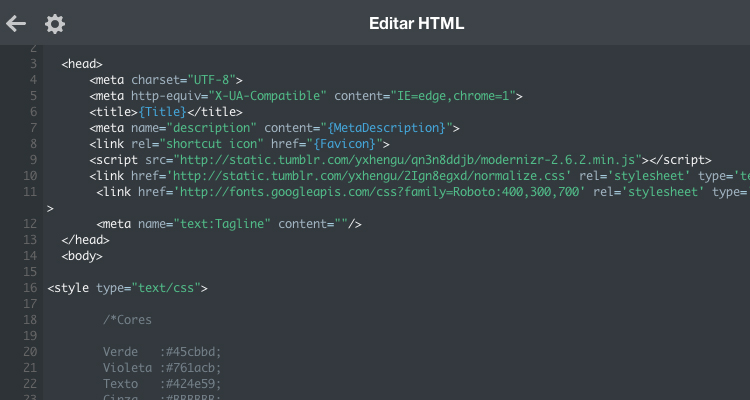

Lenguaje de marcas - Actividad 1

Definiciones
Lenguaje de marcas: forma de codificar un documento que, junto con el texto, incorpora etiquetas o marcas que contienen información adicional acerca de la estructura del texto o su presentación. Para saber más haga click aquí.
Sistemas de gestión de información: tipo de sistemas de información que recopilan y procesan información de diferentes fuentes para ayudar en la toma de decisiones en lo referente a la gestión de la organización. Para saber más haga click aquí.
ERP (Sistemas de Gestión Empresarial): conjunto de sistemas de información que permite la integración de ciertas operaciones de una empresa, especialmente las que tienen que ver con la producción, la logística, el inventario, los envíos y la contabilidad. Para saber más haga click aquí.
Características
HTML
- Puede ser creado y editado con cualquier editor básico de textos.
- Es multiplataforma, o sea, puede ser visualizado por cualquier navegador de cualquier sistema operativo.
- No diferencia entre mayúsculas y minúsculas.
- Utiliza etiquetas o marcas, que consisten en breves instrucciones de comienzo y final, mediante las cuales se determina la forma en la que debe aparecer en su navegador el texto así como también las imágenes y demás elementos en la pantalla del ordenador.
- Cada elemento de un documento HTML consta de una etiqueta de comienzo, un bloque de texto y una etiqueta de fin.
- Lenguaje estático.
- Es utilizado para la creación de páginas web.
- Los documentos HTML son documentos de hipertexto que aparecen enlazando a otros documentos.
- Es un estándar reconocido por todo el mundo y cuyas normas define un organismo sin animo de lucro llamado World Wide Web Consortium, más conocido como W3C.
Fuente
CSS
- Complementariedad con documentos estructurados.
- Independencia del vendedor, la plataforma y el dispositivo.
- Mantenibilidad.
- Simplicidad.
- Rendimiento de la red.
- Flexibilidad.
- Riqueza.
- Combinación con lenguajes alternativos.
- Accesibilidad.
Fuente
XHTML
- Fácilmente visualizables, editables y validados con herramientas XML estándar.
- Puede usar aplicaciones (por ejemplo scripts o applets) que se basen ya sea en el modelo del objeto de HTML o XML[DOM].
Fuente
XML
- Es un estándar para escribir datos estructurados en un fichero de texto.
- Parece HTML pero no lo es.
- Está en formato texto, pero no para ser leído.
- Consta de una familia de tecnologías.
- No requiere licencia.
Fuente
MARKDOWN
- Permite escribir y dar estilo al fichero a la vez.
- Mejora la facilidad de publicación de contenido.
Fuente
XPATH
- Lenguaje sencillo con sintaxis no XML.
- Permite acceder o consultar partes de un documento XML.
- Está inspirado en las rutas de acceso a archivos.
- Trabaja sobre el árbol del documento XML.
Fuente
XQUERY
- Proporciona los medios para extraer y manipular información de documentos XML, o de cualquier fuente de datos que pueda ser representada mediante XML como, por ejemplo, bases de datos relacionales o documentos ofimáticos.
- Utiliza expresiones XPath para acceder a determinadas partes del documento XML.
- Incluye la posibilidad de construir nuevos documentos XML a partir de los resultados de la consulta.
- Se basa en el modelo en árbol de la información contenida en el documento XML.
Fuente